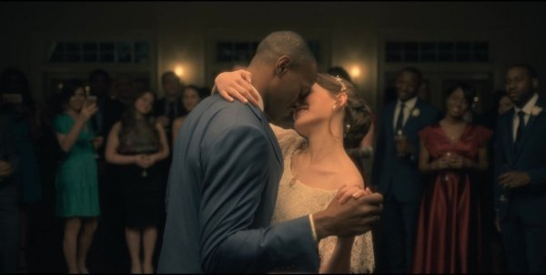

Quando a família mudou para aquela casa, eles achavam que iam viver ali apenas por um tempo. Aquele ali era pra ser um lar temporário, que eles iam reformar e restaurar, pra vender, pra que depois eles pudessem se mudar para uma casa que a mãe estava projetando, que seria a “Forever House”, a “Casa deles pra sempre”. Mas Desde o começo, a Casa já começava a demonstrar que ela queria que os Crain ficassem ali, e que ela queria que eles sentissem que a vida deles estava sob o controle da Residência Hill.

Hugh Crain, o pai das cinco crianças. Enganou a casa e a Olivia, cometendo suicidio na Hill House para que ambas deixassem seus filhos irem embora. Sempre prezou pela segurança da família.


Olivia Crain, a mãe. Buscava apenas o amor e a proteção dos seus filhos, de forma eterna.

Steve, que é o mais velho, e o mais cético dos irmãos. Ele representa o Primeiro dos 5 estágios do luto: A Negação, quando você não aceita que aquilo aconteceu. Ele é retratado como um irmão que é escritor, que escreve a história da residência Hill justamente porque ele se enxerga fora dela. Ele acredita que ele é o único da família porque ele se nega a aceitar que aquelas histórias de fantasmas e assombrações realmente aconteceram no passado deles. E essa negação constante de que ele faz parte da família Crain, afasta todos da vida dele. Inclusive a própria esposa. Porque a negação do seu próprio passado chegou ao ponto de fazer com o Steve fizesse uma vasectomia, porque ele não queria admitir sequer a possibilidade de ter um filho que fosse “doente” como o restante da sua família.
Shirley, o estágio da raiva. Shirley é tão focada no trabalho, e em sentir que ela tá levando a casa funerária a sério, e tem uma raiva tremenda do irmão Steve, porque ela sente que ele não cumpre suas obrigações de irmão mais velho, e aí cabe a ela cuidar da família inteira. Ela tenta exercer um controle sobre a Theo, sobre o Luke e sobre a Nell porque ela quer sentir que eles estão agindo como ela quer, como se eles fossem “personagens que ela controla na sua história”, para que eles não tenham o mesmo destino da mãe. Mas o principal obstáculo dela ao tentar conversar com os irmãos é sempre a sua falta de paciência para dialogar, já que ela quase sempre termina gritando com eles, ou fazendo coisas do tipo... dar um soco no peito da Theodora.


Theodora representa o terceiro estágio, que é o da barganha, ou da negociação. Isso porque, numa tentativa de tentar barganhar, de tentar balancear toda a culpa que ela sente na sua vida, por não conseguir se relacionar com as pessoas, por causa da sua sensibilidade psíquica ao tocar nas pessoas, por causa do passado dela e da família naquela casa, ela tenta compensar tudo fazendo “boas ações”. Então, ela trabalha como psicóloga tentando usar o seu dom para ajudar outras pessoas, para que ela se sinta menos mal. E tudo na vida dela segue essa lógica de, algo bom compensa algo ruim... Não é à toa que, ela afirma para si mesma que a faculdade que ela fez, a profissão que ela tem hoje, compensam o fato dela ter desobedecido a irmã mais velha, e aceitado o dinheiro do Steve, do lucro do livro que deturpava a história da família.


O Luke, que apesar de ser irmão gêmeo da Nell, é mais velho que ela por alguns minutos, representa notavelmente o estágio da Depressão. Ele está sempre tentando lidar com a sua dor da forma mais destrutiva possível.


Nell representa o quinto estágio do luto, que é a Aceitação. A aceitação de que tá tudo bem que eles sejam diferentes, de que eles não são como as outras famílias, por causa do que eles viveram. Mas isso não quer dizer que eles estejam presos ao passado.


Durante a infância da Eleanor a Casa já fazia com que ela sentisse que era invisível pra família. Um exemplo é quando a família tá passando por uma tempestade na casa, e a Eleanor desaparece. Os irmãos não sabem pra onde ela foi, os pais ficam desesperados atrás dela, mas quando ela finalmente aparece de novo, ela diz pra eles que ela estava ali o tempo todo. Que ela gritava e chamava a atenção deles, dizendo que “eu estou aqui”. Mas de que nenhum deles olhava pra ela.”

Dentre todos os cinco irmãos, a Nell sentia que a Casa escolheu ela, para ser o foco das suas assombrações, assombrando ela com uma figura medonha que ela chamava de “Moça do Pescoço Torto”. É também o nome dela que aparece escrito na parede, quando a mãe encontra a frase “Come Home Nell”, “Venha pra casa Nell”, e acusa ela de ter escrito aquilo na parede, embora ela saiba que não fez nada. E a mãe possui um carinho exagerado e super protetor com ela, porque sente que ela, enquanto caçula da família, precisa de mais atenção. A mãe mostra pra ela o colar que ela tem, e entrega ele pra filha se sentir segura enquanto dorme, e diz que quando a filha for grande, aquele colar vai ser dela.
A partir daí, assim como a Nell do livro, a Nell da série também começa a colocar projeções na sua vida... Depois de toda a tragédia que acontece na vida dela, o suicídio da mãe, os segredos que o pai escondia deles... Ela passa a viver tentando enfrentar esse luto eterno, que nunca termina, e sente que em algum momento a jornada dela vai ter um propósito. Que em algum momento ela não vai mais se sentir invisível. E ela sente isso, e projeta todas essas expectativas, quando ela conhece o Arthur. Ela não teria conhecido ele, se não fossem os pesadelos, se não fosse a Paralisia do Sono com a qual ela sofre… Se não fossem as assombrações da Moça do Pescoço Torto, que ainda aparece de vez em quando pra ela, que fizeram ela buscar terapia, que depois fizeram ela buscar tratamento para terapia do sono... que enfim fizeram com que ela conhecesse o seu “Amor do final da jornada”.
Mas é então que o Arthur morre numa noite, de um aneurisma... e tudo ao redor dela começa a desmoronar. E por mais que a morte dele não tenha causas sobrenaturais... a Nell acredita que o que matou ele é a mesma coisa que a persegue desde quando ela era criança. A mesma assombração que passa pra ela essa ideia de que “Ela ainda precisa terminar essa jornada incompleta, encontrando o amor de verdade.” Por isso, ela resolve voltar na Hill House numa forma de encarar seus medos, mas acaba se suicidando, depois de ser enganada pela casa e pelo espírito da sua mãe que vivia lá, necessitando reunir todos os seus filhos.
Não é à toa que quando ela chega, a mãe tá escrevendo “Welcome home Nell” na parede, “Bem-vinda ao lar, Nell”, dando pra ela a noção de que ela completou exatamente o que a jornada dela era pra ser. Quando ela era criança, a mensagem voltada pra ela dizia que ela devia ir pra Casa, e agora ela descobriu que a mensagem completa dizia “Bem-vinda”, mostrando pra ela que o Destino dela, a sua “Forever House” esteve sempre ali.